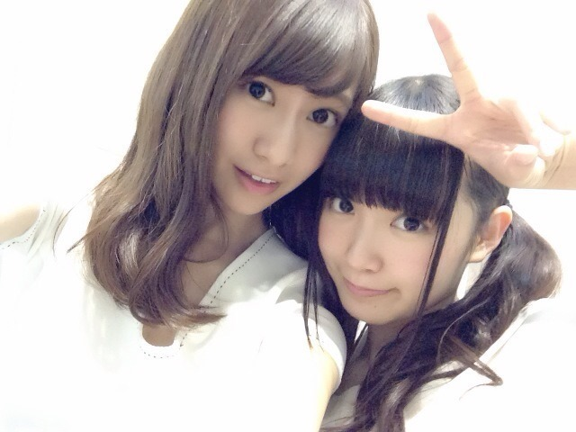

| 2014/07 20 Sun | ひめたん-OoO-その461 |
昨日は京都で全国握手会でした！
ライブがなくて
握手のみという新しいスタイル
いかがでしたか？

握手は 玲香 (桜井玲香ちゃん)とペア！
玲香ファンのみなさん
仲良くしてくださって
ありがとうございました(＊^ω^＊)
玲香とペアになるのは2nd以来で
お久しぶりーの方もいらっしゃったけど
はじめましての方が多かった気がする！
ひめきゅんさんもたくさん来てくれて
ほんとにありがとう♪♪
関西にお住まいのみなさんは
久々に近くまで会いに行けてよかった☆
今回は日帰りだったから
あまり京都を満喫できなかったけど
それでもみなさんに会えて嬉しいかったよ！
おじゃましました( ´▽` )ﾉ
遠征ちーむのみなさん
遠くから会いに来てくれてありがとう！
京都に行く日は
いつも雨降ってる気がする
今日も途中降ってたみたいで心配(´・ω・｀)
今度京都行くときは晴れますよーうに☆
ひめたんびーむしようとして振りかぶった私と
ほっぷすてっぷしようとした振りかぶった玲香が
衝突するってことがありました( °ω° )
な、なんてアクティブなレーンなんだ( °ω° )はう
予定していたライブが
中止になってしまった分
何か楽しいことできないかなーって
サイン入りグッズプレゼント
トークコーナー
のど自慢大会決勝(但し予選なし)
と いろんな企画コーナーがありました！
ひめたんは
のど自慢大会決勝(但し予選なし)で
「翼の折れたエンジェル」を歌いました！
何でこの選曲？ってたくさん聞かれたけど
この曲 好きなのーp(^^)q
NOGIBINGO!の「TOMORROW」とか
乃木のので話した「フレンズ」とか
自分が生まれる前の歌も意外と知ってる♪
あんなにたくさんの方の前で披露するの
緊張したなあー
あいかわらずピッチが不安定だったけど
でもみなさんが盛り上げてくださって
あたたかい会場の雰囲気に救われました( ;o; )♡
みさ先輩の歌とってもステキだったよー！
こんな感じで、昨日は
ライブがなくて残念な思いをさせてしまった方
少しでも楽しんでいただけてたら嬉しいです。
今後の全握は
どんな感じになるかわかんないけど
企画コーナーする機会があったら
楽しみにしててくださいね☆
いつものライブも
早く復活しますように......

前回の日記に貼りきれなかった
2部のワンピース
こーんな雰囲気でした！
このヘアみんなに誉めてもらったの
んふふ>゜)))彡
そして
のぎ天#2更新されました
みなさん観たかなー？
ボウリング対決前編！
まだ観てないって方もいるかもだから
今からネタバレするのもあれかな？
次回の日記に書くね♪
最後に、
かずみさん (高山一実ちゃん)の
ブログ読んだー？
ラブライブのスクフェス私もやってるよー
ずーさんが教えてくれたのー
ラブライブ、元々は
アニメとか観てない人なんだけど
これを機にラブライブ大好きになったー♪
ひめたんはことりちゃん推しですっ♡
スクフェスでは
スマイル属性URにこちゃんにお世話になるよ！
彼女はとっても優秀だよ！
にっこにっこにー！
ラブライバーさんよかったら
今度語りましょう／(^o^)＼

 学校でブレイクするためには
学校でブレイクするためには
どうすればいいですか！？
難しい質問(・∀・)ｷﾀ
そうねーブレイク......かあーなんだろうね
けん玉とか習得したらいいんじゃない？(適当)
ひめたんはどの高さのツインテールがすき？？
耳ちょい上！これマスト！
メイクさんにいつも
耳ちょい上ってオーダーします
ひめたんは、池・沼・湖・川の
何処に一番いますか？
また、エサは何を選べば良く釣れますか？
選択肢......ナメられたもんだぜ☆
サイリウムは
ピンクが好きなひめたんに質問です！
コールする時なんて呼ばれたいですか？
ぴんく好きー(＊^^＊)
「ひめたん！」が呼びやすいんじゃないかな
もっと良いの思い付いた人は提案待ってます
でも「ひめたん！」って聞き取りやすいよ。
ひめたんは男の子だったら甚平と浴衣
どっち着たい？？
甚平！甚平の方が楽！
なんとなく、浴衣は着せてくれる人がいないと
自分で着るの難しそうだよね
ひめたんのことだからすぐ崩れちゃいそうだし......
ひめたんサイリウムぴんくだよね？
ひめあしゅ推しの場合
何色持てばいいかな？？（笑）
格差社会(←私と飛鳥のユニット名)推し！嬉しい！
水色 × ぴんく
しろ × ぴんく のどっちかはどうかしら？
あの、ね、
ひめたんのことちょっとでも好きなら
ぴんくは準備してくれたら嬉しいなーなーんて。
ひめたんの日記の
コメント欄下２ケタに46を踏んだ方へ
手書きでコメ返するコーナー
＼ ひめたん46 ／

いつもたくさんのコメント
ありがとうございます
浴衣が好評だったみたいで(＊´ω`＊)
恐るべし浴衣マジック。
また機会があったら着ようかな......
乃木ののの感想待ってるよー♪
明日は個握よろしくお願いしますっ！
(＊´・>・＊)
また機会があったら着ようかな......
乃木ののの感想待ってるよー♪
明日は個握よろしくお願いしますっ！
(＊´・>・＊)
コメント(537)
2014/07/20 23:36